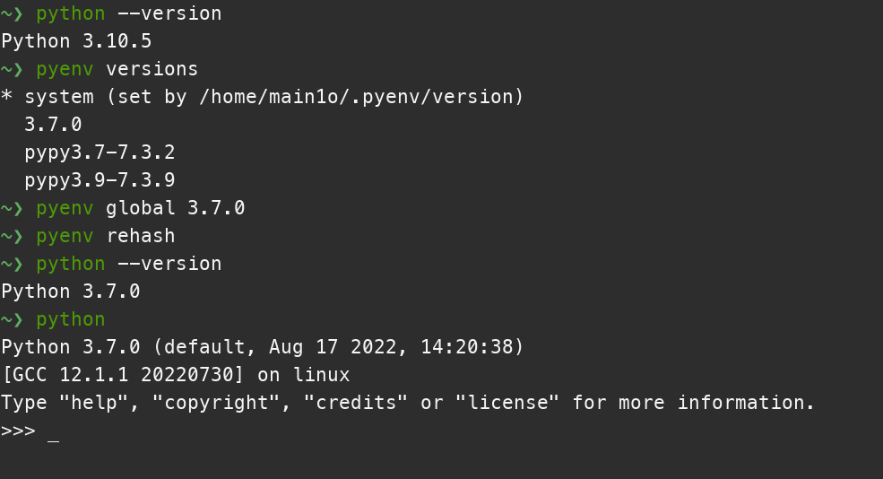

Pyenv
Pyenv
- Python3 和 Python2 之间的差距 ， 以及Python3.10 的改动
- Pyenv能方便的管理这些不同版本处于同一个系统。并且能全局切换不同的Python解释器以及Pip
- 操作简单，方便上手
一、安装
-
我是 Arch Linux ，直接
yay -S pyenv或者pacman即可 -
官方脚本安装
curl https://pyenv.run | bash # or curl -L https://github.com/pyenv/pyenv-installer/raw/master/bin/pyenv-installer | bash
二、配置
-
bash
echo 'export PYENV_ROOT="$HOME/.pyenv"' >> ~/.bash_profile echo 'export PATH="$PYENV_ROOT/bin:$PATH"' >> ~/.bash_profile echo -e 'if command -v pyenv 1>/dev/null 2>&1; then\n eval "$(pyenv init -)"\nfi' >> ~/.bash_profile # 初始化 -
Zsh
echo 'export PYENV_ROOT="$HOME/.pyenv"' >> ~/.zshrc echo 'export PATH="$PYENV_ROOT/bin:$PATH"' >> ~/.zshrc echo -e 'if command -v pyenv 1>/dev/null 2>&1; then\n eval "$(pyenv init -)"\nfi' >> ~/.zshrc # 初始化
三、基本使用
下载的版本位置：
~/.pyenv/version/在使用 下载版本或者设置版本 的命令，不要加
sudo否则安装到root环境
pyenv exec
# 指定python版本执行某一个命令
pyenv global 3.xxx
# 设置python全局版本
pyenv install
# 安装某个版本的Python
pyenv versions
# 输出已经安装的python版本
pyenv version
# 输出现在设置的python版本
pyenv rehash
# 安装新版本后rehash一下
pyenv install -l
# 输出全部能安装的Python
